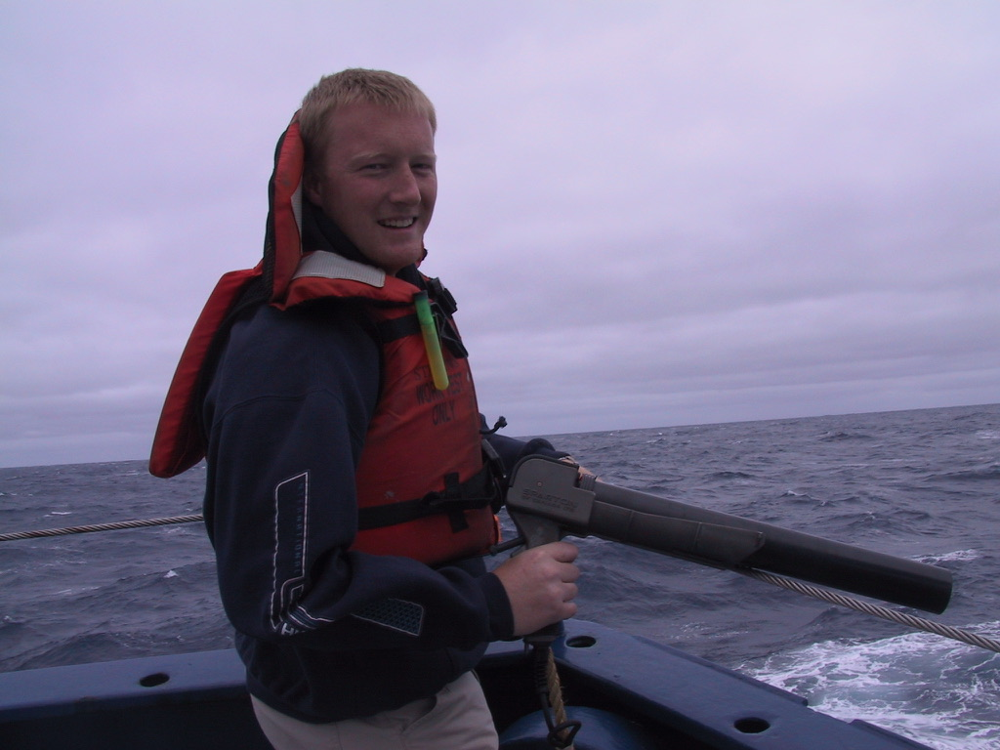
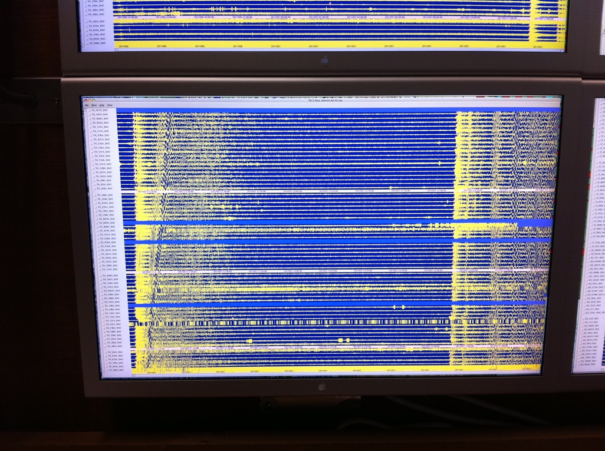
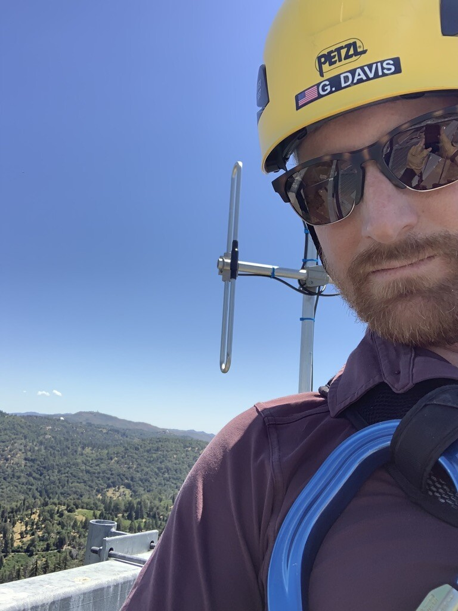

Friday was my last day at UC San Diego’s Scripps Institution of Oceanography. I started in the fall of 2002 as a Programmer/Analyst 2 in the Shipboard Computing Group, and I left over 23 years later as an Information Systems Analyst IV and supervisor. That’s a long time at one institution, but the work was never the same from one year to the next.
Starting at Sea
My first role at Scripps put me aboard research vessels in the UNOLS fleet as a shipboard computer technician. I served as the principal liaison between the ship’s crew and the rotating scientific parties, integrating their experimental systems with the permanent compute and sensor infrastructure aboard floating laboratories. I learned to operate and maintain multibeam sonar systems for seafloor mapping, maintained weather and water sensors, and worked autonomously with whatever resources were aboard — because there wasn’t much ship-to-shore communication to fall back on.

Launching an eXpendable Bathymetric Thermograph (XBT) probe in the Southern Ocean, halfway between Cape Town and Antarctica
It was during this time that I worked with colleagues from Oregon State, Woods Hole, and Lamont-Doherty at Columbia to design SWAP, a ship-to-ship and ship-to-shore data exchange network using WiFi and OSPF that allowed vessels passing each other to relay data. That work was published in Marine Technology magazine.
I also worked extensively with the HiSeasNet project, which provided C-band satellite connectivity to the fleet — a relationship that continued for the next 20 years.
Building the Array Network Facility
In 2005, I moved into the Programmer/Analyst 3 role and became lead systems and storage architect for the EarthScope USArray Transportable Array — one of the largest seismological experiments ever conducted. The Array Network Facility at Scripps was responsible for acquiring data from over 1,700 seismic stations as the array marched across the continent, with roughly 40 stations being moved every month.

Real-time seismic waveform display from the USArray Transportable Array
I grew the ANF’s infrastructure from a loose collection of Sun Microsystems and Linux servers to a high-availability storage architecture, evolving through Sun Cluster with SAM-QFS, and ultimately to virtualized ZFS-backed storage appliances with carefully tuned NFS locking for multi-reader database access. I designed a remote backup solution using ZFS snapshots replicated to a secondary datacenter in Seattle, and worked with our database and acquisition experts to build warm standby failover procedures.
All of it was managed as infrastructure-as-code — first with CFEngine, then Puppet. Servers were treated as disposable rebuild instances with user data on separate partitions. This was years before “cattle, not pets” became a buzzword.
ROADNet and the IoT Before There Was an IoT
Alongside the USArray work, I served as the de facto computing systems lead for the ROADNet project — an early experiment in data exchange across disparate networks that was a precursor to the Internet of Things. I inherited a sprawling collection of Solaris servers and Linux single-board computers suffering from severe configuration drift, and brought them under CFEngine management. I developed custom sensor acquisition software and used Solaris Jumpstart and RedHat Kickstart to provision servers that shipped to partner organizations around the world.
HPWREN: From Research Network to Critical Infrastructure
The High Performance Wireless Research and Education Network (HPWREN, AS 46985) is where I spent the most transformative years of my career. Founded in 2000 as a collaboration between Scripps and the San Diego Supercomputer Center, HPWREN started as an experimental fixed-wireless network connecting researchers to remote locations in Southern California, with a permanent backbone supplemented by numerous temporary experimental deployments. The public safety and first responder role didn’t become formalized until around 2013 — but once it did, the network’s mission and the stakes of keeping it running changed fundamentally.

Camera and radio cluster atop Cuyamaca Peak
I created and directed the NOC and infrastructure team, taking responsibility for daily operations and maintenance of the network. Over the years, I led the expansion from 20 backbone sites across 3 counties to over 50 backbone sites across 6, with maximum backbone bandwidth growing from 110 Mbps to 10 Gbps using carrier-grade licensed microwave radios.
The technical modernization was substantial. I migrated the interior gateway protocols from EIGRP to OSPF and BGP, adopted MPLS and MPLS-TE for traffic segmentation, introduced diverse L2 and L3 VPN service offerings, and drove the replacement of aging Catalyst L3 switches with Cisco ASR, MikroTik, and Ubiquiti routers. I spearheaded HPWREN’s integration with the statewide CENIC backbone, creating multiple internet peering sites and reinforcing critical wireless links with dedicated L1 and L2 paths.
The network serves over 20 partner organizations — from Caltech’s Mount Palomar Observatory to CalFire, California State Parks, San Diego Gas & Electric, and San Diego State University. Each partner has different integration patterns, different SLAs, and different expectations. Managing that diversity with a lean team across backcountry mountain-top sites that are sometimes only accessible by helicopter during fire season was the defining operational challenge of my career.
AlertCalifornia: Statewide Wildfire Detection
As AlertCalifornia grew out of the earlier AlertWildfire consortium, I served as the project’s chief network architect. The program now operates over 1,200 high-definition cameras across California, providing 24/7 wildfire monitoring to CAL FIRE, utilities, and first responders.
I managed the network transition when AlertCalifornia split from AlertWildfire, negotiating with camera providers and ISPs to replace VPN connections and re-address cameras as necessary. I integrated AlertCalifornia as a co-tenant with HPWREN’s existing network core sites at SDSC and UC Irvine, saving over $70,000 in hardware and connectivity costs that would otherwise have been duplicated.
I designed and deployed a switch-centric core architecture at multiple sites, negotiated direct layer 2 connections with major camera providers through CENIC, and implemented a dedicated camera exchange network for improved security and observability. I deployed NetBox for IPAM and DCIM, and codified network planning and provisioning policies that the team could follow and extend.
The Constant Thread: Automation
Looking back across all of these projects, the constant thread has been automation. From CFEngine in 2004 to Puppet to Ansible and Terraform/Terragrunt today, I’ve spent over two decades treating infrastructure as code — not because it was trendy, but because you can’t manage 50+ remote sites and 1,700 data streams with a small team any other way. Every manual process eliminated was one fewer truck roll to a mountaintop, one fewer 3 AM page, one fewer thing that breaks when someone leaves.
In the last couple of years, I’ve been leveraging AI tools for infrastructure modernization, completing a full Puppet codebase refactoring in two weeks that would traditionally have taken months — achieving 95% test coverage while removing over 1,000 lines of technical debt.
What I’m Taking With Me
Over 23 years at one institution might look like a narrow career on paper, but the reality is that I’ve had a dozen different jobs under one roof — shipboard technician, storage architect, systems lead, network engineer, NOC director, and supervisor. I’ve worked across the full stack from Layer 1 optical transport to Layer 3 routing protocols, from petabyte-scale storage systems to IoT sensor networks, from research vessels in the Pacific to mountain-top radio sites in the backcountry.
The work that mattered most was always the work with stakes — knowing that the network I helped build is feeding real-time imagery to incident commanders making evacuation decisions during fire season, or that the data acquisition systems I designed are capturing seismic events that scientists need for their research. That kind of mission focus is something I’ll carry forward.
Thank You
To everyone I’ve worked with over these 23 years — the researchers, the field techs climbing towers, the first responders, the partner agencies at CENIC, Caltech, CalFire, SDG&E, and across the UC system, the students I supervised, and the colleagues who made the hard days manageable — thank you. It’s been the privilege of my career.
The mission of protecting California communities isn’t going anywhere, and neither is the team making it happen every day. I’m proud of the foundation I helped build, and I’m confident it’s in good hands.
Today, I’m starting a new chapter as a Senior DevOps Administrator at Oceaneering International. After 23 years building infrastructure for science and public safety on land and at sea, I’m excited to bring that experience to a company whose work spans the ocean floor to outer space. It feels like a natural fit.